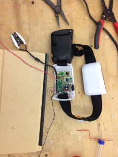
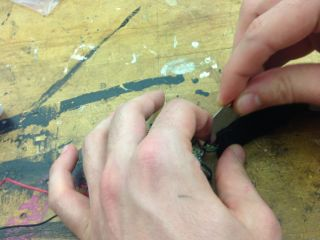
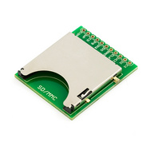

What is this tutorial about?
This tutorial goes through the steps of how to create your own wearable EEG brain reader by hacking an existing invention and using the arduino hardware and software to extract data. This was created through the documentation of a project from fall 2012. The goal of the project was too collect information about a persons meditative or attention qualities while watching a lesson within a plant surrounded environment.
MindFlex Design
We will be using the MindFlex hardware from the Mattel toy company. This toy reads raw EEG signals which then controls a balls action within the game. The key is the Nueroscky chip which is within the Mindflex headgear. There is a pin which you can connect the arduino to receive the data on your computer. The arduino must have its own power source separate from the Mindflex. I then used the brain library, to test the serial read of the EEG reader. Once I got that to work I augmented the example code to make an LED light blink based on the signal strength of the attention information signal.
• S U P P L I E S •
Step One
You've ordered your Mindflex and are waiting for it in the mail! You might want to play with it first because after that it might not work as a game! Once you have the headgear out it go look at the two white sides of the headgear. One of them will have a switch and the other will be completely enclosed unscrew the enclosure to reveal a chip that looks like this.

If you want cut open the black fabric to remove the sensor. Then solder a new wire from the T pin shown below. This will be used to connect to the arduino.


